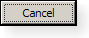

def run(self):
....
self.dlg.myListWidget_1.addItem('日本')
self.dlg.myListWidget_1.addItem('イギリス')4 デザイン
QGIS Plugin を作成する出発点は、グラフィカル・ユーザー・インフターフェイス (GUI) から始めるかと思います。
あらかじめ、紙などでこのようなウィンドウというものを作図しておきましょう。
QGIS は、Python と Qt を PyQt で繋いでいます。同様のものに PySide というものがあり、検索時に PySide も多く表示されますが、PySide のコードは動作しないことが多いので注意しましょう。
4.1 Designer
QGIS のフォルダ内には、Designer というアプリケーションが入っています。
Windows の場合、Section 3.1.3 であらかじめ作っておいた designer_gui.bat をダブルクリックします。
Windows OSGeo4W: C:\OSGeo4W\bin\designer_gui.bat
macOS: /Applications/QGIS-LTR.app/Contents/MacOS/Designer.app
4.2 よく使う Widget
GUI を設計する際には、Widget という言葉をよく使います。Widget とは、ボタンやテキスト入力などのパーツのことです。
4.2.1 LineEdit と TextEdit
テキスト入力フォームには、以下のように三種類あります。
lineEdit: 一行だけのシンプルなテキスト入力

textEdit: 複数行で、太字なども可能
plainTextEdit: 複数行で、太字などのないシンプルなテキスト入力
QLineEdit についての参照 (バージョン６のものになります)。
https://www.riverbankcomputing.com/static/Docs/PyQt6/api/qtwidgets/qlineedit.html
4.2.2 Label
Label は、LineEdit などと異なり、ユーザが入力するのではないテキストです。
4.2.3 ListWidget
List は、１列複数行で表示する表です。ListView と ListWidget がありますが、ListWidget の方が簡単に扱うことができます。

ListWidget は、複数のテキストを縦に並べて表示をし、一つを選択するように使います。ComboBox と異なる点としては、選択肢を表示する視認性と、複数選択が可能になります。
Designer では、List Widget を、ウィンドウにドラッグして配置します。この際、objectName を myListWidget_1 などに設定します。この objectName は、 Python の中でも使います。ノートなどにメモしておきましょう。
List Widget のあるウィンドウが選択された状態で右クリック (macOS だとダブルタップや Cmd + クリック) をし、Layout が Lay Out in a Grid などになっていると、ウィンドウの大きさを変えた際に自動的に伸び縮みします。
各列は item と呼ばれます。Python で item を追加するには、MyPlugin.py の def run(self): を
注: Dialogue でなく Dock の場合、dlg を dockwidget に変えて、self.dockwidget.myListWidget_1.addItem('日本') とします。以下も同様です。
デフォルトでは、１列ずつしか選択することができません。以下のコードで、複数行選択が可能になります。
from qgis.PyQt.QtWidgets import QAbstractItemView
...
def run(self):
....
self.myListWidget_1.setSelectionMode(
QAbstractItemView.ExtendedSelection
)QListWidget についての参照 (バージョン６のものになります)。
https://www.riverbankcomputing.com/static/Docs/PyQt6/api/qtwidgets/qlistwidget.html
4.2.4 ボタン
ボタンは、QPushButton と言います。

「押された時の処理」の書き方を学んでいきましょう。
まず、Designer では Pushu Button をウィンドウにドラッグし、obectName を myPushButton_1 などのように設定します。
MyPlugin.py に、以下のようなコードを追加します。
...
def run(self):
....
self.dlg.myPushButton_1.clicked.connect(self.ChangeButtonLabel)さらに、ChangeButtonLabel() というメソッドを、同じファイルの地番下に追加します。
...
def ChangeButtonLabel(self):
self.dlg.myPushButton_1.setText('押された')これで、ボタンを押されると、ボタンが「押された」と表示されます。
https://www.riverbankcomputing.com/static/Docs/PyQt6/api/qtwidgets/qpushbutton.html
4.3 レイアウト
デフォルトでは、ユーザがウィンドウを大きくしても、LineEdit などはその大きさに合わせて伸びてくれません。
多くの場合は、Layouts の Vertical Layout と Horizontal Layout を組み合わせてレイアウトを完成させます。
最後に、ウィンドウ全体を選択した状態で右クリックします。コンテキストメニューの一番下、Lay out > Lay Out in a Grid を選択します。
4.3.1 上寄せ
ウィンドウのサイズが変わっても、LineEdit などを中央にせずに上寄せのままにしたい場合、Vertical Spacer を使います。
4.3.2 可変 splitter
ListWidget などを並べて、幅を可変にするには、Lay Out Horizontally in Splitter を使います。この Widget はデフォルトでは使えないグレーアウトの状態です。並べたい二つの ListWidget を選択した状態で、このボタンが有効になります。
4.4 モーダル
QGIS のプラグインウィンドウは、メインウィンドウに隠れることがあります。
メインウィンドウよりも常に上にあるウィンドウをモーダルウィンドウと言います。
QGIS プラグインの場合
def run(self):
...
self.dlg.setWindowFlags(Qt.WindowStaysOnTopHint)とします。
4.5 子ウィンドウ
Designer を使い、MyPlugin_2.ui を作成します。
テキストエディタで、MyPlugin_2.py を作成します。
\# -*- coding: utf-8 -*-
from qgis.PyQt import QtGui, QtWidgets, uic
import os
FORM_CLASS, _ = uic.loadUiType(os.path.join(
os.path.dirname(__file__), 'MyPlugin_2.ui'))
class MyPlugin_2 (QtWidgets.QDialog, FORM_CLASS):
def __init__(self, parent = None):
"""Constructor."""
super(MyPlugin_2, self).__init__(parent)
self.setupUi(self)MyPlugin.py も編集します。
class jpdata:
"""QGIS Plugin Implementation."""
def __init__(self, iface):
...
self.MyPlugin_2 = MyPlugin_2()この後、子ウィンドウを登場させたいところに、self.MyPlugin_2.show() をすることで、ウィンドウが登場します。
また、子ウィンドウをモーダルにしたい場合は、前の節をご参照ください。